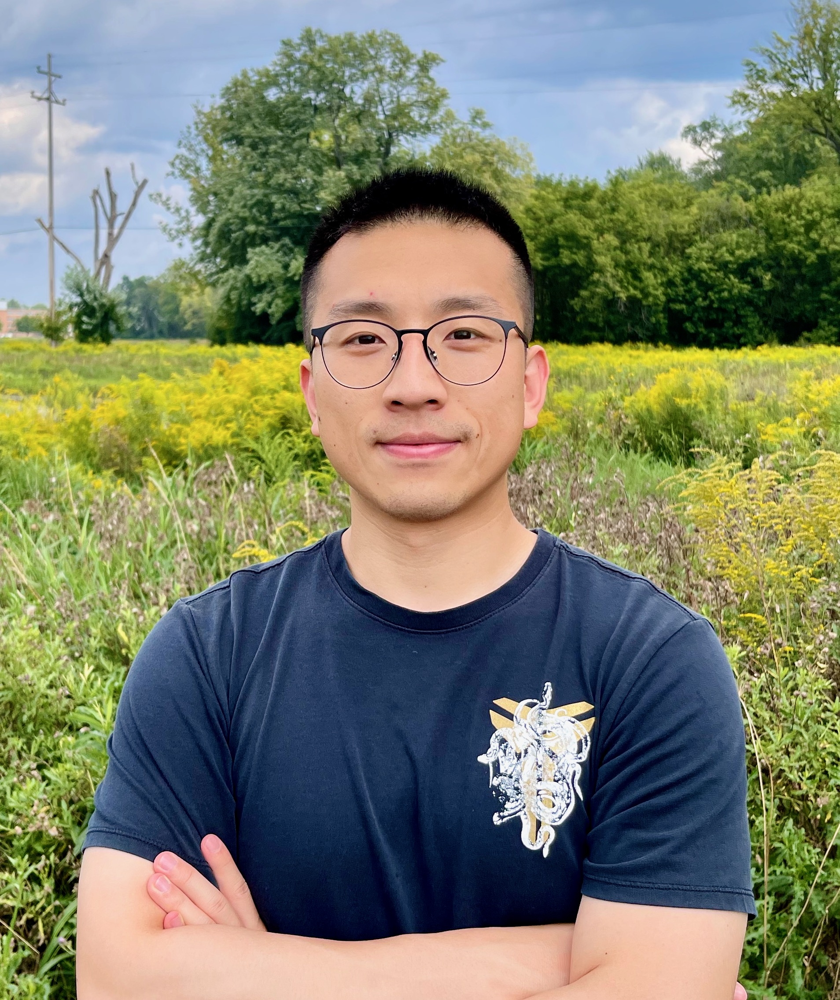
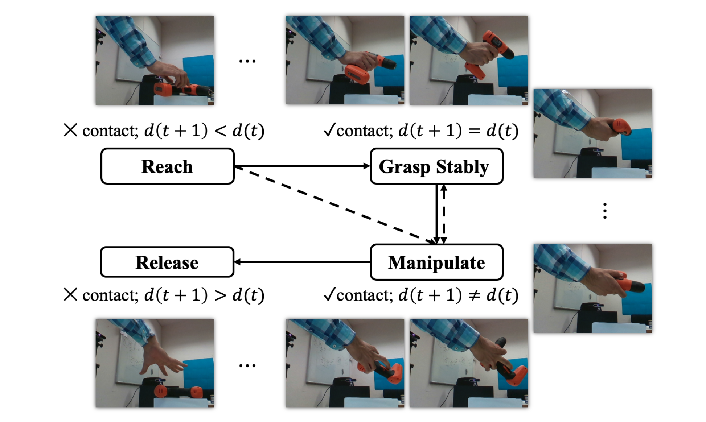
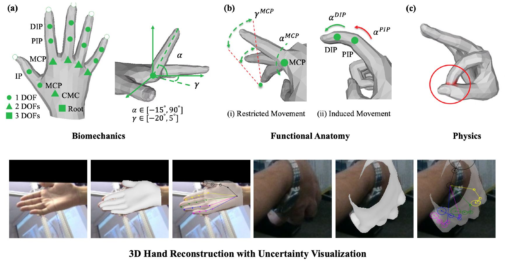
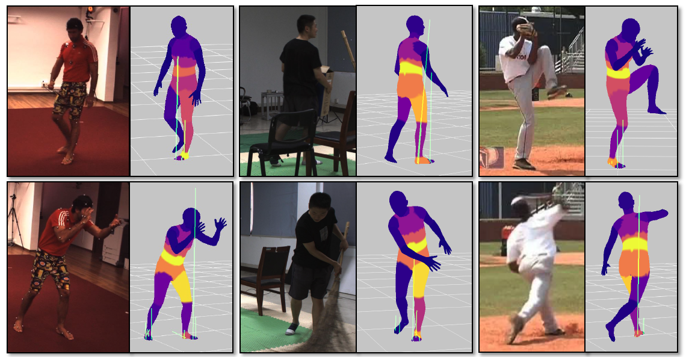
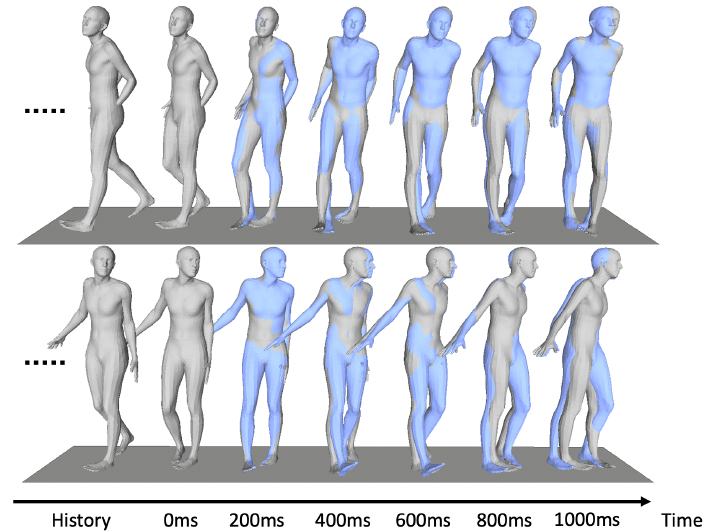
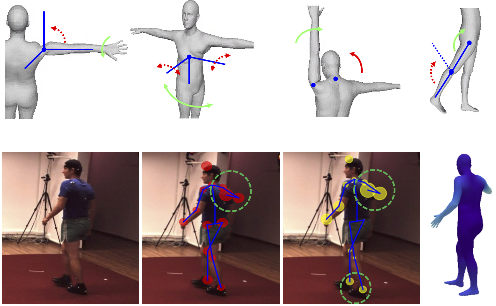

I am a Senior Research Scientist at ByteDance Inc, working with the PICO team.
I graduated from Rensselaer Polytechnic Institute (Computer Engineering & Applied Mathematics) and Xi'an Jiaotong University. Previously, I was at MyoLab AI, Meta Reality Labs, and Amazon AWS.
I build Human-Embodied AI that perceives, understands, and emulates human behavior. My research integrates Physics and Probabilistic Modeling into scalable learning systems.




